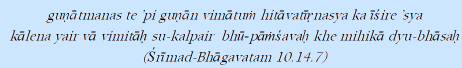

Absolute Theory in Science

Translation: In time, learned philosophers or scientists might be able to
count all the atoms of the earth, the particles of snow, or perhaps even the
shining molecules radiating from the sun, the stars and other luminaries. But among
these learned men, who could possibly count the unlimited transcendental qualities
possessed by You, the Supreme Personality of Godhead, who have descended onto the
surface of the earth for the benefit of all living entities?
There are 8.4 million species of living beings exists according to Padma Purana. Every species
in this creation is searching for truth, starting from the insect to human be-ing. Everyone is
seeking truth according their intelligent and level of understanding. Finding truth in a body
of animal or insect or tree is not so easy and practical. However, a human being can easily
explore the possibilities of finding the truth. For example, an elephant is more
powerful animal but is controlled by a tiny man, who has a very low capacity in term of strength.
Human beings are special because they have higher intelligence. Human beings can enquire
about their existence, how this universe exists and how everything around him exists.
Many philosophers, scientists, yogis struggled to understand the truth. Although many
theories, laws and processes are developed for searching for truth but in the due course
of time one process is replaced by another one. Hence, the truth which is found out
by these methods is not true in all situations, at all times and all circumstances but
somehow the truth is very illusion. As time passes the theories are changing and what we
studied yesterday today it may change. Today's theory may modify tomorrow or get completely
rejected at some time. The whole body of knowledge based on hypothesis, observation,
verification and then law is called SCIENCE. Hence, we need to find out theories that
are never changing with respect to time, circumstance and person, such as speed of light
is absolute, which is true for all situations, theory of relativity so truth must be absolute.
Everyone has his own way of truth and falsehood but what is a unified conclusion? We search
the truth exactly like 6 blind men trying to understand an elephant. The story goes that....
Once upon a time, there lived 6 blind men in a village. One day the villagers told them,
Hey, there is an elephant in the village today. They had no idea what an elephant is.
They decided, Even though we would not be able to see it, let us go and feel it anyway.
All of
them went where the elephant was. Every one of them touched the elephant.
Hey, the elephant is a pillar, said the first man who touched his leg.
OH NO! it is like a rope, said the second man who touched the tail.
OH NO! it is like a thick branch of a tree, said the third man who touched the trunk of the
elephant.
It is like a big hand fan said the fourth man who touched the ear of the elephant.
It is like a huge wall, said the fifth man who touched the belly of the elephant.
It is like a solid pipe, Said the sixth man who touched the tusk of the elephant.
They began to argue about the elephant and every one of them insisted that he was right.
It looked like they were getting agitated. A wise man was passing by and he saw this. He stopped
and asked them, What is the matter? They said, We cannot agree to what the elephant is like.
Each one of them told what he thought the elephant was like. The wise man calmly explained
to them, All of you are right. The reason every one of you is telling it differently because
each one of you touched the different part of the elephant. So, actually the elephant has all
those
features what you all said.
If a person has eye he can perceive much more then what 6 blind men conceived. A medical doctor
may tell much more then you and me. Science has broad way of observation and it should not confine
only with observation and verification. The Absolute Truth is explained in Vedanta sutra
-Now is the time to inquire about the Absolute Truth.
The first aphorism in the Vedantasutra is athato brahma jijnasa. In the human form of life one
should put many questions to himself and to his intelligence. In the various forms of life lower
than human life the intelligence does not go beyond the range of life's primary necessities
namely eating, sleeping, mating and defending. Dogs, cats and tigers are always busy trying
to find something to eat or a place to sleep, trying to defend and have sexual intercourse
successfully. In the human form of life, however, one should be intelligent enough to ask what
he is, why he has come into the world, what his duty is, who is The Supreme Controller, what
is the difference between dull matter and the
living entity, etc. There are so many questions, and the person who is actually intelligent should
simply inquire about the supreme source of everything: athato brahma jijnasa.
The example is given here that even if the most learned scholars could someday count the particles
of earth, snow and light, they would still fail to understand the qualities of the Lord. In this
example earth,
snow and light are progressively more subtle; thus it is to be understood that there is an
increasing difficulty in counting their virtually infinite particles. This is the unsolved
problem of the universe which is given in Srimad Bhagavatam. Every scientist, philosopher and
yogi must take guidance from the holy books like Srimad Bhagavad Gita, Sri
mad Bhagavatam, Quran, and Bible and know about absolute truth. A living entity who develops
the transcendental qualities found in the Lord receives immeasurable benefit and eventually
goes with the Lord back to His own abode, where all living beings are liberated and fully
endowed with the transcendental nature.